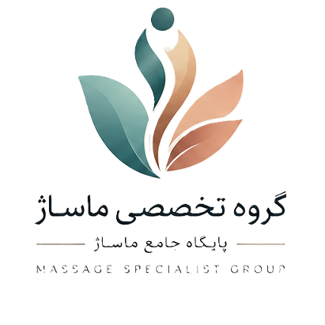
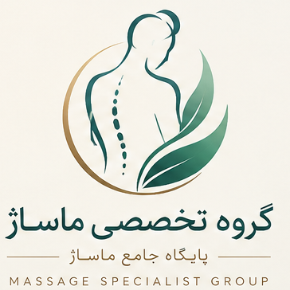
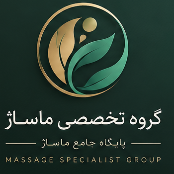
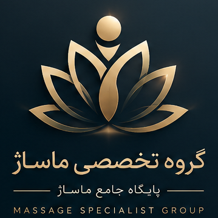
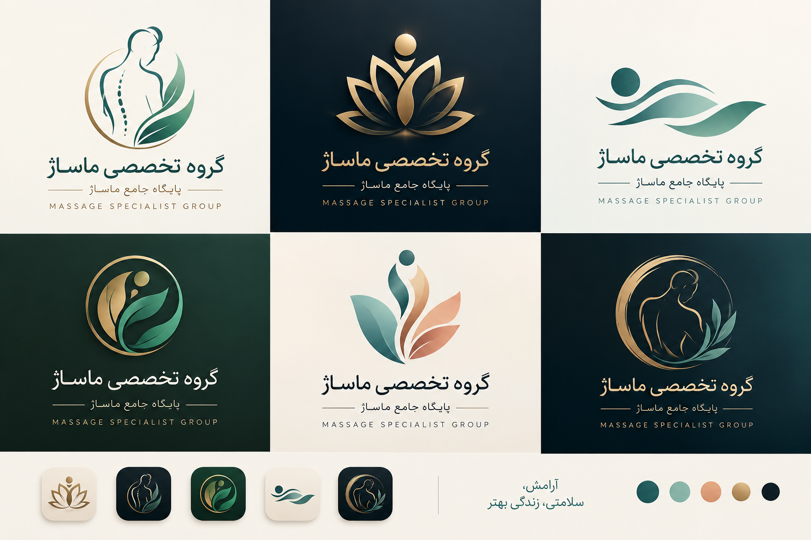

بدنها شبیه هم نیستند
نیاز، سبک زندگی، میزان فشار روزمره و ترجیح هر فرد میتواند متفاوت باشد؛ بنابراین تجربه نباید از یک نسخه ثابت شروع شود.
گروه تخصصی ماساژ با یک ایده ساده شکل گرفته است: انسان برای بازگشت به تعادل، گاهی به فضایی نیاز دارد که در آن بتواند مکث کند، نفس بکشد و بدن خود را دوباره بشنود.

آرامشزندگی امروز پر از نشستن، حرکت، کار، صفحهنمایش، فشار زمانی و مسئولیتهای پیدرپی است. در چنین شرایطی، مراقبت از بدن نباید به یک تصمیم اتفاقی یا یک تجربه کلیشهای تبدیل شود.
ما تلاش میکنیم ماساژ را بهعنوان یک تجربه کاملتر ببینیم؛ تجربهای که از شناخت نیاز آغاز میشود، با انتخاب آگاهانه ادامه پیدا میکند و در فضایی آرام و محترمانه به پایان میرسد.
این نگاه، ما را به سمت ساختن یک پایگاه جامع برای معرفی، توسعه و ارائه تجربههای مختلف ماساژ و مراقبت از بدن هدایت کرده است.
نیاز، سبک زندگی، میزان فشار روزمره و ترجیح هر فرد میتواند متفاوت باشد؛ بنابراین تجربه نباید از یک نسخه ثابت شروع شود.
از گفتوگوی اولیه و انتخاب رویکرد تا فضا، زمانبندی و نحوه ارتباط، هر جزئیات بخشی از تجربه نهایی است.
احترام به حریم، انتخاب و مرزهای مخاطب برای ما یک اصل اساسی در شکلگیری تجربه حرفهای است.
نگاه ما فقط ارائه یک جلسه نیست؛ میخواهیم مجموعهای منسجم از دانش، تجربه، متخصصان و راهکارهای مرتبط با ماساژ و تندرستی شکل بگیرد.
مسیرهایی برای آرامش، رهایی و مراقبت متناسب با ترجیحات هر فرد.

۰۲معرفی رویکردها، تکنیکها و تجربههای تخصصی با تأکید بر انتخاب آگاهانه.

۰۳ایجاد زمینه همکاری با متخصصان و توسعه خدمات و تجربههای مکمل.

۰۴طراحی برنامههای رفاهی و تجربههای گروهی برای سازمانها و مجموعهها.
این ارزشها فقط شعار نیستند؛ چارچوبی هستند برای اینکه مسیر طراحی خدمات و ارتباط با مخاطب یکپارچه باقی بماند.
حریم، انتخاب، زمان و شرایط هر فرد باید در تمام مراحل تجربه محترم شمرده شود.
ماساژ حرفهای نیازمند شناخت رویکردها، توجه به جزئیات و انتخاب متناسب با هدف جلسه است.
شفافیت، ارتباط درست و ثبات در کیفیت، پایه رابطهای است که میخواهیم با مخاطب بسازیم.
هدف ما سادهکردن انتخاب و ایجاد یک مسیر روشن برای مخاطب است؛ از اولین گفتوگو تا پایان تجربه.
شناخت هدف، ترجیح و شرایط کلی مخاطب پیش از انتخاب تجربه.
انتخاب رویکرد و ساختار مناسب بر اساس نیاز و نوع تجربه مورد انتظار.
اجرای آرام، منظم و حرفهای در فضایی که برای تمرکز و آرامش طراحی شده است.
شنیدن نظر مخاطب و استفاده از آن برای بهبود مستمر کیفیت تجربه.
گروه تخصصی ماساژ فقط به یک خدمت یا یک فضای مشخص محدود نمیشود. این مجموعه میتواند بستری برای معرفی رویکردهای مختلف ماساژ، توسعه خدمات تخصصی، همکاری با متخصصان و شکلگیری تجربههای متنوع برای افراد و سازمانها باشد.
مخاطبان این مجموعه میتوانند افرادی باشند که به دنبال زمانی برای آرامش و مراقبت از خود هستند، یا مجموعههایی که میخواهند برنامههای رفاهی و تجربههای مرتبط با تندرستی را برای کارکنان و مخاطبان خود توسعه دهند.
مسیرهای خدمات را ببینید ←
همکاران تخصصیهمکاری و توسعه خدماتچشمانداز ما ایجاد یک پایگاه جامع، قابل اعتماد و توسعهپذیر است؛ جایی که مخاطب بتواند خدمات و رویکردهای مختلف را بهتر بشناسد، انتخاب آگاهانهتری داشته باشد و تجربهای متناسب با نیاز خود پیدا کند.